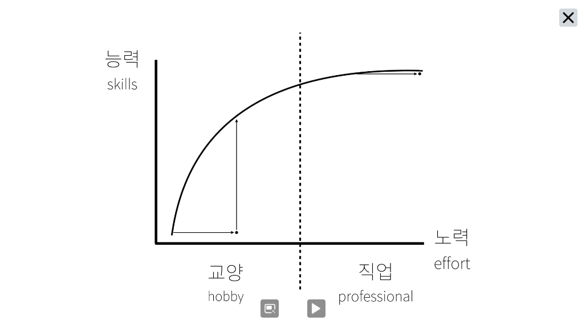

어제보다 조금 더 달라진 나를 만나보세요.
그 질병과 함께 살아간 해이다. 그리고 내가 생각보다 이렇게 빨리 사회에 나갈 수 있게 해준 해이다. 그곳에서 정말로 무서운 것은 간부님의 핀잔, 주변 사람들의 시선보다 내가 느끼고 있는 나태함과 무능력함이었다. 무엇인가를 재미있게 배우는 둥 싶다가도 빠르게 무언가를 받아먹으려다가 금새 체해버리곤 했던 날들이 떠오른다. 조금 더 덜 무기력하게 내가 무엇을 할지를 곰곰이 생각해보며 나아가도 늦지 않았을텐데.. 후회가 앞서는 날들이지만 내가 가지고 있던 두려움이 더더욱 컸다.
그나마 괜찮을 것이라던 정보처리기사도 이전에는 나태함과 방황으로 시험이 다가올수록 두려움과 좌절감에 둘러쌓인채로 시험을 보았다. 나름 괜찮게 보았다고 생각했지만 언어에 대한 이해가 필요한 부분에서 말그대로 말짱 도루묵이 되었다. 정말 나는 그동안 배워서 이미 잘 알고 있는 내용이다라고 생각했지만 사실은 진짜 아무것도 모르고 있었다라는 것을 여실히 느낀다.
이것을 기점으로 그동안 애써 무시하고 있던 생활코딩을 틀었고 그것은 내게 있어서 딱딱한 수학적 논리와 사고를 요구하는 강압적인 모습이 아닌 논리들의 운문으로 짜여진 시집과 같이 느껴졌다. 그리고 그 사이에 있는 제작자들의 마음과 우리 주변에서 생기고 있는 작은 혁신들에 대해 다시 한번 생각하게 해주었다.
내가 가지고 있는 스펙이라면 고졸 그리고 정보처리산업기사 정도다. 시험에 중요한 것들은 배웠지만 실제 웹에서 가장 많이 쓰이는 것에 대한 중요성을 모르고 있었던 나에게 변화를 가져다 줄 것이다.
나름의 의지를 가지고 시작했지만 이 사이트는 사실 불편한 점이 한 두 가지가 아니다. 사진 크기도 제멋대로이고 예쁘장하게 오지도 않는다. 심지어 단락간의 간격도 그리 편해보이진 않는다. 정말 불편하다는 생각이 극에 달한 만한 정도가 아닐 수 있을까. 내 삶에 문제들을 푸는 과정에서 오히려 내가 그동안 목말라했던 것들을 풀어나갈 수 있는 기회가 되기를 소망해본다.
